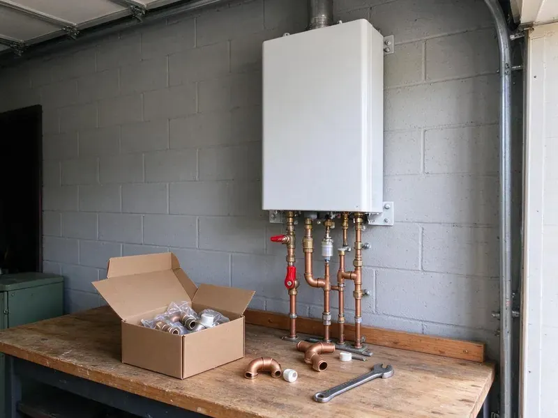

Water Softener Installation in Brookhaven, WV
Dealing with hard water in Brookhaven, WV? GJK Plumbing provides dependable water softener installation to safeguard your home and appliances.
- Guaranteed Satisfaction
- Loop Installs Available
- Expert West Virginia Plumbers
- Clear Pricing
Expert Water Softener Installation in Brookhaven, WV.
We size each system to your water hardness and family size.
Water Softener Installation and Hard Water Solutions in Brookhaven, WV
GJK Plumbing specializes in professional water softener installation, helping homeowners in Brookhaven, WV combat the challenges of hard water. Our certified plumbers assess your home's particular needs and recommend the ideal system to improve water quality.
Our expertise includes:
- Salt-based softeners with Fleck and Clack control valves
- Reliable water hardness testing and system sizing
- Ensuring compliance with local plumbing codes

Additional Plumbing Installation Services in Brookhaven, WV
We install water heaters, pumps, lines, and fixtures across Brookhaven, WV with precision workmanship that meets every local code.


Customers
Why Choose GJK Plumbing for Water Softener Installation in Brookhaven, WV?
We help you navigate the options, from salt-based ion exchange systems to salt-free alternatives, to find the perfect fit for your Brookhaven home and water usage.
- Quality Systems, We install durable, high-performance water softeners from leading manufacturers.
- Accurate Testing, We test hardness and chlorine levels before recommending a system.
- Better Water Quality, Soft water reduces mineral buildup, improving the taste and feel of your water.
Citywide Coverage
From older homes without loops to new builds, we serve every part of Brookhaven. We can add a loop where none exists so you can enjoy soft water throughout the house.
Experienced Team
Our plumbers install softeners, conditioners and filtration systems regularly. They know how to program control valves and set regeneration schedules for efficiency.
Safety-First Approach
Before, during and after installation, our plumbers follow strict safety protocols, protecting your home and family. We verify that all installations comply with Brookhaven and West Virginia plumbing regulations for your peace of mind.
Trusted Certified Brookhaven Plumbing Services Professionals
At GJK Plumbing, we take pride in providing licensed, certified plumbing services throughout Brookhaven, WV. Backed by recognized industry credentials, our experienced plumbers combine technical skill with genuine customer care. Whether it is repair, installation, or maintenance, we follow strict safety and quality standards to deliver long-lasting results you can trust.
Call Us Now PHCC Plumbing Contractor Recognition
PHCC Plumbing Contractor Recognition Better Business Bureau (BBB) Accreditation
Better Business Bureau (BBB) Accreditation Angi Certified Pro
Angi Certified Pro ISO 9001 Quality Management Certification
ISO 9001 Quality Management CertificationReliable Water Softener Installation Services in Brookhaven, WV
Water Softener Replacement in Brookhaven, WV
Older softeners can lose efficiency due to worn resin, failing valves or clogged injectors. We remove the old unit and install a new, more efficient model. Newer metered valves regenerate only when needed, saving salt and water. We check the loop and drain line during replacement. A new softener can restore full performance.

Softener Loop Installation in Brookhaven
A softener loop is the plumbing connection that routes your main water line through a softener. Many newer homes include a loop, but older homes often do not. We cut into the main line, install the loop and add a bypass valve. We keep outdoor hose bibs and irrigation on hard water when possible to save salt. A proper loop makes future service easy.
Residential Water Softener Installation in Brookhaven
Hard water can damage plumbing and appliances, leading to costly repairs. Our residential water softener installation services are designed to protect your home's entire plumbing system. We assess your water usage and hardness levels to recommend the right system size and type, ensuring optimal performance for your Brookhaven household. From initial consultation to final setup, we handle every detail with precision.
Salt-Free Water Conditioner Installation in Brookhaven
For homeowners looking for an alternative to traditional softeners, we also offer salt-free water conditioner installation. These systems condition the water to prevent scale buildup without removing healthy minerals or adding salt. While not true softeners, they are an excellent option for scale prevention and are popular in many Brookhaven households.
Whole-House Water Softener Systems in Brookhaven
A whole-house water softener system is installed directly on your main water line, treating all the water entering your Brookhaven home. This ensures every faucet, shower and appliance receives soft water. Our installation process involves carefully integrating the system into your existing plumbing, including needed bypass valves and pressure regulators, to provide comprehensive protection against hard water throughout your property.
Water Softener Installation Cost in Brookhaven, WV
Softener installation costs depend on system type, capacity and whether you need a loop. Installing on an existing loop is faster and costs less than adding a new loop. Salt-free systems and combination filters vary in price. We give you a written quote that includes equipment, labor and setup. We also explain long-term salt and maintenance costs.
Water Hardness Testing and Programming in Brookhaven
Accurate testing is essential for proper softener settings. We test your water for hardness, iron and chlorine before installation. Then we program regeneration frequency and salt dosage. This helps reduce salt use while keeping water soft. We review settings with you so you understand how the system works.

Salt-Based Water Softener Installation in Brookhaven
Salt-based (ion exchange) water softeners are the most common and effective solution for truly softening water. These systems use a resin bed to exchange hard minerals like calcium and magnesium with sodium ions. GJK Plumbing expertly installs many models of salt-based softeners, making sure of proper connection to your main water line, correct drainage setup and accurate programming for regeneration cycles in your Brookhaven home.
Water Softener Installation Near Me in Brookhaven, WV
Looking for 'water softener installation near me' in Brookhaven, WV? GJK Plumbing is your local expert. We are very familiar with water quality issues in West Virginia and provide prompt, reliable service to homeowners throughout the area. Our team is always ready to respond quickly to your water treatment needs.
If you're searching for 'water softener installation near me' in Brookhaven, WV, look no further than GJK Plumbing. Our local teams are well positioned to provide fast response times and expert service throughout the area. We focus on local homeowners, ensuring quick and efficient installations.
GJK Plumbing at a Glance
- Fully licensed plumbing team covering Brookhaven, WV
- 24/7 emergency service with same-day scheduling
- Upfront, flat-rate pricing before work begins
- 4.8-star rated by 832+ West Virginia customers
Brookhaven Map
Brookhaven Information
- Population
- 5,707
- Area codes
- Local
- Service area
- Brookhaven and communities within 40 miles
- Nearby
- Morgantown, Cheat Lake, Fairmont, Bridgeport
Installing a water softener is especially beneficial for homes in Brookhaven, WV with hard water, which can lead to heavy scale buildup and appliance damage. Many West Virginia homes rely on private wells or springs, and that water can carry iron, manganese or sulfur that discolors fixtures and laundry.
Expert Services
Trust our professionals for reliable GJK Plumbing solutions in Brookhaven, WV.
Our Specialized Plumbing Services in Brookhaven, WV
At GJK Plumbing, we provide a complete range of plumbing services across Brookhaven, WV. From leak detection to full system installations, our team ensures fast, precise, and affordable service for both residential and commercial properties. Explore our core services below:


How Our Water Softener Installation Process Works in Brookhaven, WV
Here is what to expect when you book a softener installation with our team.
Request a Quote
Call us at (681) 223-3607 to schedule a consultation. We'll discuss your needs, test your water and provide a written, no-obligation quote.
System Selection
Our plumbers will help you choose the best water softener system for your home, considering water hardness, usage and budget.
Professional Installation
Our licensed plumbers will install your new water softener, making sure all plumbing and connections are done to code and function properly.
Frequently Asked Questions About Water Softener Installation in Brookhaven
Most water softener installations cost $1,500 to $4,000 including equipment. Adding a new softener loop usually adds $500 to $1,500 depending on access.
Many homes benefit from a softener when the water is hard. Many West Virginia homes rely on private wells or springs, and that water can carry iron, manganese or sulfur that discolors fixtures and laundry. Softeners protect water heaters, fixtures and appliances from scale.
While some homeowners attempt DIY installation, it's generally recommended to hire a professional. Incorrect installation can lead to leaks, inefficient operation or even damage to your plumbing system. Professional installation ensures proper sizing, correct connections and adherence to local plumbing codes.
We install a variety of trusted water softener brands known for their reliability and performance, including Fleck, Culligan, Ecodyne and Kenmore. Our plumbers can guide you through the options and help you select the best brand and model for your particular needs and budget.
In many areas, a plumbing permit is required for major plumbing alterations like water softener installation to ensure compliance with local codes. GJK Plumbing will advise you on any required permits for your Brookhaven installation and can assist with the application process.
Installing a water softener offers many benefits, including preventing scale buildup in pipes and appliances, extending appliance lifespan, reducing soap and detergent usage and improving the feel of your skin and hair. It also makes cleaning easier and keeps clothes looking brighter.
Most households add salt every one to two months depending on water use and hardness. Metered systems use salt more efficiently.
In many cases a specific permit is not required for a standard residential water softener installation. However, if the installation involves significant changes to your home's main water line or drainage system, a permit might be necessary. Our team will advise you on any permit requirements for your project in Brookhaven.
What People Are Saying About Our Plumbing Experts?

Laura S.
I scheduled a water heater replacement, and the team made the process smooth and affordable. The new unit works perfectly, and they cleaned up after completing the job.
Water Heater Replacement · Fairmont, WV
James P.
Our commercial plumbing system had a leak under the sink, and GJK Plumbing handled it professionally. The plumbers arrived quickly and restored everything without disruption to our customers.
Commercial Plumbing · Bridgeport, WV
Emily R.
I called GJK Plumbing for plumbing repair, and the technician was fast, polite, and thorough. They explained the problem clearly and fixed it the same day. I will definitely hire them again. Highly recommended!
Plumbing Repair · Morgantown, WVRobert G.
The trenchless sewer replacement saved our front yard. They walked us through the camera inspection footage first so we knew exactly what we were paying for.
Sewer Line Replacement · Morgantown, WVSofia M.
Two new toilets installed in one visit, no mess left behind, and the tech even adjusted a faucet he noticed was dripping. Fair pricing and really friendly.
Toilet Installation · Cheat Lake, WV
Patricia H.
We had a slab leak that two other companies could not find. GJK Plumbing located it in under an hour, explained our options, and the price matched the quote to the dollar.
Slab Leak Repair · Brookhaven, WV